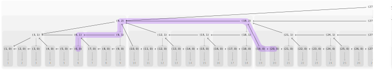
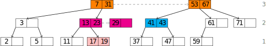
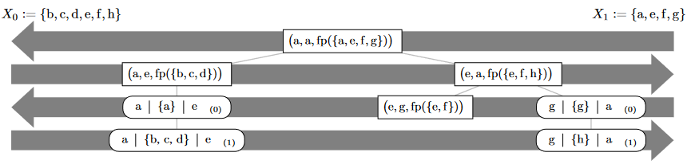
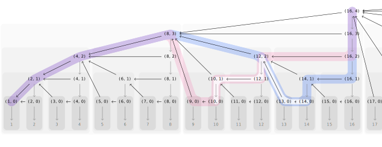

Some Projects
Reed
A prefix authentication scheme that is more efficient than the one used in certificate transparency. Supersedes Bamboo.
Macromania

A macro system for generating plaintext files. Suitable for producing web-native scientific papers such as this one.
Seasonal Clock
A tool for scheduling meetings across timezones, mapping UTC offsets to emoji. Carrying on some of @cinnamon’s light.
Some Writing
Geometric Search Trees
A family of randomized set data structures that generalizes the zip-trees to work more efficiently in the presence of cache hierarchies. G-trees have applications for set fingerprinting and membership proofs.
Range-Based Set Reconciliation
Range-based set reconciliation is a simple approach to efficiently computing the union of two sets over a network, based on recursively partitioning the sets and comparing fingerprints of the partitions to probabilistically detect whether a partition requires further work. Several open source projects started considering this algorithm.
Strict Principles for Lazy Sequences
APIs like iterators, streams, sinks, readers, or writers are all APIs for lazily working with potentially infinite sequences of items. There is a large number of competing designs, but little principled work on evaluating them. Starting from the question of how to objectively evaluate such APIs, I derive some instructive and useful hierarchies of interfaces for lazily working with sequences.
Better Prefix Authentication
Like certificate transparency logs, but more simple and more efficient.